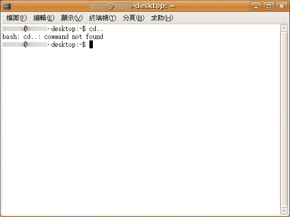
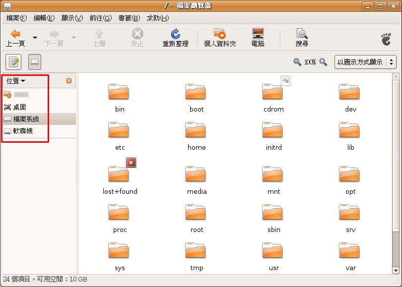

也紀念我們永遠的朋友 李士傑先生（Shih-Chieh Ilya Li）。
學Linux，從圖形介面開始有何不可？
不管是初學者，還是從 Windows「跳槽」到 Linux 這個自由軟體陣營最主要的作業系統，通常我都是這麼建議學習者的。
多年來推廣資訊教育和作為一個電腦顧問的經驗，其實學習者最大障礙是心理上的恐懼，不是電腦本身的操作難易程度。雖然和早期的電腦比起來，操作的簡易度上已經進步很多了，但是和電視比起來，它還是很難。電視只要安裝好，接好天線，按了電源開關之後，只要會轉台和控制聲音就可享受電視帶來的樂趣，操作方法永遠只有一種，所以不論老少和教育程度，幾乎人人都會使用電視。
當然，這也因為電視的功能單純，所以不需要複雜的操作程序，電腦能做的事情可就多很多，想讓它做什麼事，就得安裝相關的軟硬體設備。東西弄的越多，相關的操作程序就越多，當然複雜度也就越高，複雜度越高，學習的障礙當然也越高。
所以，很多初學者一開始是「滿懷大志」的要學 Linux，總希望 Linux 在省去高昂的授權費之餘，還能幫它做這個做那個。對於能完成這些事情該具備怎樣的電腦，可說是毫無所知，等到開始要學習的時候才發現，想達到自己的「大志」，前方居然有那麼多的「學問」等著，內心就差不多開始要打退堂鼓了，一旦到了這個階段，再怎麼簡單易用的 Linux 和應用軟體，他都不大提得起勁來學。
因此要幫助這些朋友的最首要工作，就是協助幫他們破除這個心理障礙。通常，我會以一個簡單的範例「催眠」他們：其實 Linux 很簡單啦！
當然，這是一個精心設計過的範例，而且也一定是常用的東西。但這個範例絕不會是在文字介面底下的操作，而是在圖形介面下。因為再怎麼說，圖形介面總是比文字介面親和且容易操作的多。為何我如此堅持採用圖形介面呢？且容我先講一些陳年往事吧！
早期 DOS 作業系統還流行的時候，曾經流傳過一個關於文字命令的笑話，話說某個初學者想要開啟 PE2（早期的一個文字編輯軟體），於是在文字命令列內輸入「run PE2.」他得到的回應是「Bad command or no files.」於是他改輸入「Run PE2, please.」電腦給他的回應依舊是「Bad command or no files.」換了幾個句子之後他都沒辦法開啟 PE2，最後搞到火了，於是輸入「I order you run the fucking PE2!」DOS給他的回答還是「Bad command or no files.」！
從這個笑話中，大家應該不難知道，在文字介面下，文字指令不但拼字要正確，語法也必須要對，否則唯一的回應就是命令錯誤，使用者常常不知道自己的錯誤到底在哪裡，得有耐性的檢查拼字和電腦專屬的命令語法（如果書上沒有相同的內容，往往得查書查個老半天），這種情形，很容易讓使用者感到挫折。

在文字介面下使用錯誤的指令，從電腦的回應中，我們看不出真正的問題出在哪（上圖使用 DOS 的切換目錄指令，很顯然 Linux 不接受）
當然，並不是說圖形介面就會有比較好的結果，而是圖形介面下的選項通常有限，方便使用者在一定的小範圍內嘗試，而且使用者可以透過「看圖說故事」的方式，去做多種操作上的嘗試（文字介面無從嘗試起，錯誤的語法怎麼輸入還是錯），而且只要能試出來，成就感就很大，會覺得自己「終於也能操控電腦這個神奇的機器了」，之後他的學習和使用意願就會變高，而且是高到令人難以想像的廢寢忘食。

在圖形介面底下，有限的選擇和圖示說明中，使用者比較容易進行資料夾的切換
當然，很多真正的電腦高手都跟我說過，Linux 的精髓大部分是在文字介面底下才有辦法使用，如果初學者一開始就習慣圖形介面，日後很難從頭學習文字介面的東西。這個部份我並不否認，我也認同文字介面才能學到真正的精髓，只是對於一個初學者來說，連入門功夫都不願學，又如何要他學到精髓？其次，很多的初學者的學習動機和目的只是日常應用，不見得是想變成什麼電腦高手，所謂的精髓，對他來說往往是不切實際的東西（離開課堂之後，恐怕一輩子都不會用到）。
當然，要是一開始為了興趣或工作上的理由，使用者已經下定決心想徹底瞭解作業系統，而且一開始最好就從文字介面著手。但如果只是日常的應用，如文書處理、上網、特定個人化應用軟體和影音娛樂等，硬要他去學那些用不到的東西，恐怕將會是事倍功半。要先對電腦有興趣，日後因為需而學習文字指令時，使用者的自我學習意願會比較高，因為在初學時期美好經驗的影響下，通常自我突破和「學到會」的意志會比較強烈。
至於從 Windows 跳槽的朋友，多數還是比較熟悉圖形介面，只要選擇圖形介面比較完善的版本，這些有經驗的使用者在轉換過程中，並不會有太大的困擾。雖然 Linux 有些觀念和 Windows 差異很大（註），不過在圖形介面下的操作，往往不會察覺出之間的差異，只有在特定的情況下才需要學習和了解。不過要是牽涉到文字介面，這些朋友還是不免會排斥。畢竟還是要硬背相關的命令呀！
綜合上述的各種狀況和利弊，個人還是認為先讓使用者有興趣、能接受比較重要，畢竟使用者不想用，再便利的工具也和塵土無異啊！
註：最常遇到困擾的莫過於對磁碟機的概念。在 Windows 中不論是實體或是延伸分割出來的，通通視為一台裝置（Device），在 Linux 則一律視為資料夾，二者的差異可謂天南地北。平常使用資料夾存取資料的時候不會覺得有何差別，但是加裝新硬碟時就會感到困擾。
關於作者：曾開發多本資訊教材和數位內容，並擔任相關顧問工作，個人部落格：人間研究所
專欄總覽


E-Mail：contact@openfoundry.org Address：台北市南港區研究院路2段128號 中央研究院資訊科學研究所 . 隱私權條款. 使用條款